Forma Humana
Base — Estado natural
O estado natural de Ichigo antes de despertar seus poderes espirituais. Desde criança, possui uma percepção espiritual incomum e consegue enxergar espíritos.
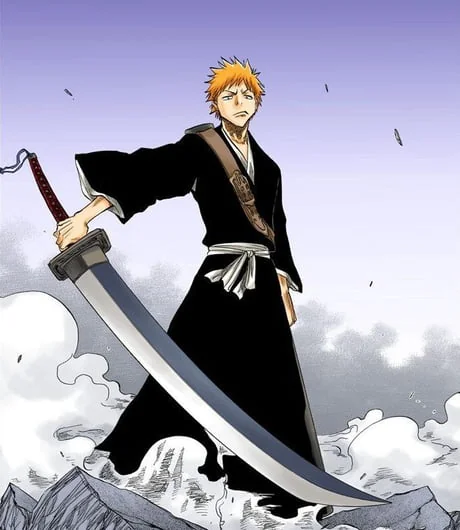
Shinigami Substituto
Primeiro despertar — poder de Shinigami
Após receber os poderes de Rukia Kuchiki, Ichigo passa a atuar como Shinigami Substituto. Sua Zanpakutō é inicialmente uma enorme lâmina e ele aprende a utilizar o Getsuga Tenshō.
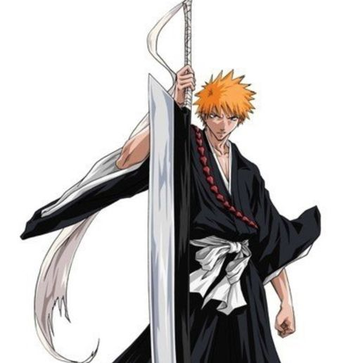
Shikai — Zangetsu
Liberação inicial da Zanpakutō
Ichigo aprende a compreender melhor Zangetsu e utiliza sua Zanpakutō em seu estado de Shikai. A grande lâmina concentra o poder espiritual em ataques de alta potência.
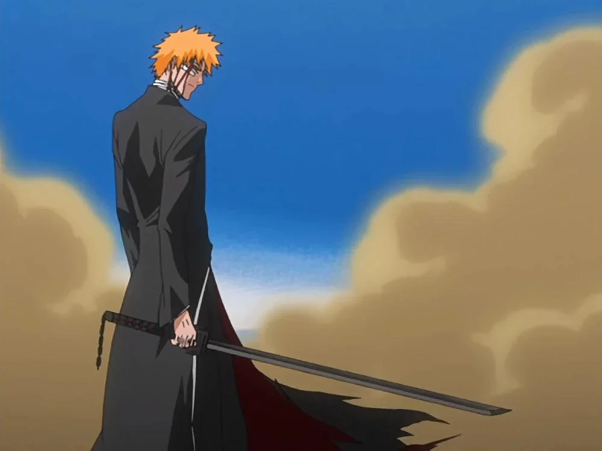
Bankai — Tensa Zangetsu
Bankai — compressão total de poder
Ichigo alcança o Bankai e transforma sua enorme Zanpakutō em Tensa Zangetsu, uma lâmina negra compacta que concentra seu poder em velocidade e força.
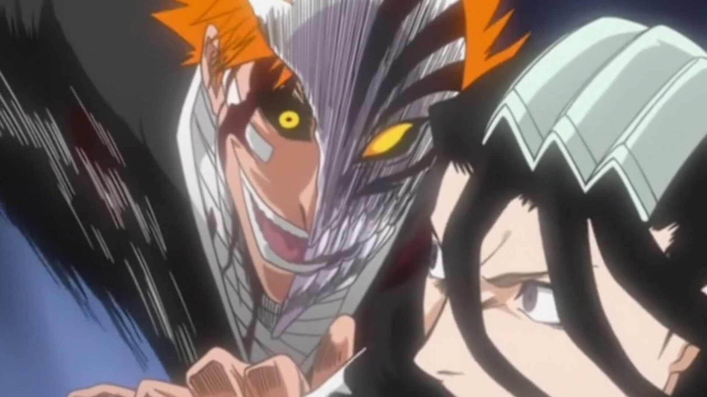
Hollow Mask
Hollowficação parcial — máscara
O poder Hollow de Ichigo se manifesta através da máscara. Depois de treinar com os Vizards, ele consegue invocá-la conscientemente e aumentar drasticamente suas capacidades de combate.

Bankai Hollow Mask (Controlada)
Bankai + máscara — controle aprimorado
Ichigo combina Tensa Zangetsu com a Hollow Mask de maneira consciente. O controle adquirido sobre a máscara permite utilizar sua força Hollow sem perder completamente o domínio sobre si mesmo.
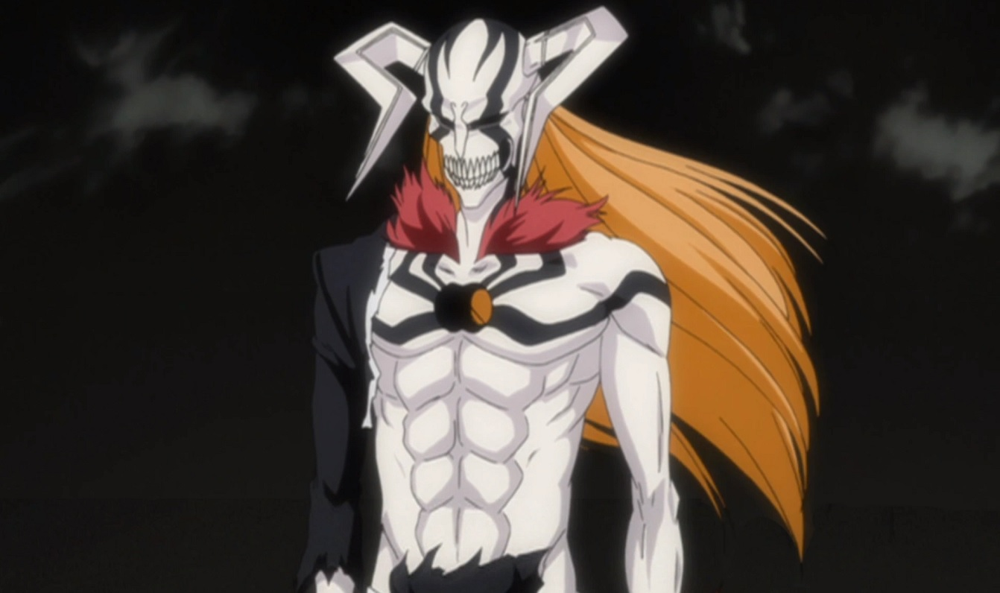
Vasto Lorde
Hollowficação completa — descontrole
Após ser mortalmente ferido por Ulquiorra, o poder Hollow de Ichigo assume completamente seu corpo. Surge uma forma Hollow extremamente poderosa, sem controle consciente de Ichigo.
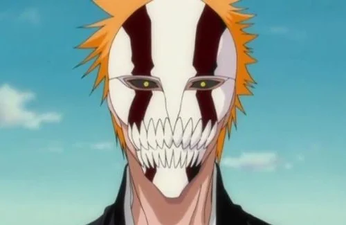
Hollow Mask (Vasto Lorde Mask)
Máscara baseada na forma Vasto Lorde
Uma representação da aparência Hollow associada à forma Vasto Lorde, destacando a evolução visual e o poder do lado Hollow de Ichigo.
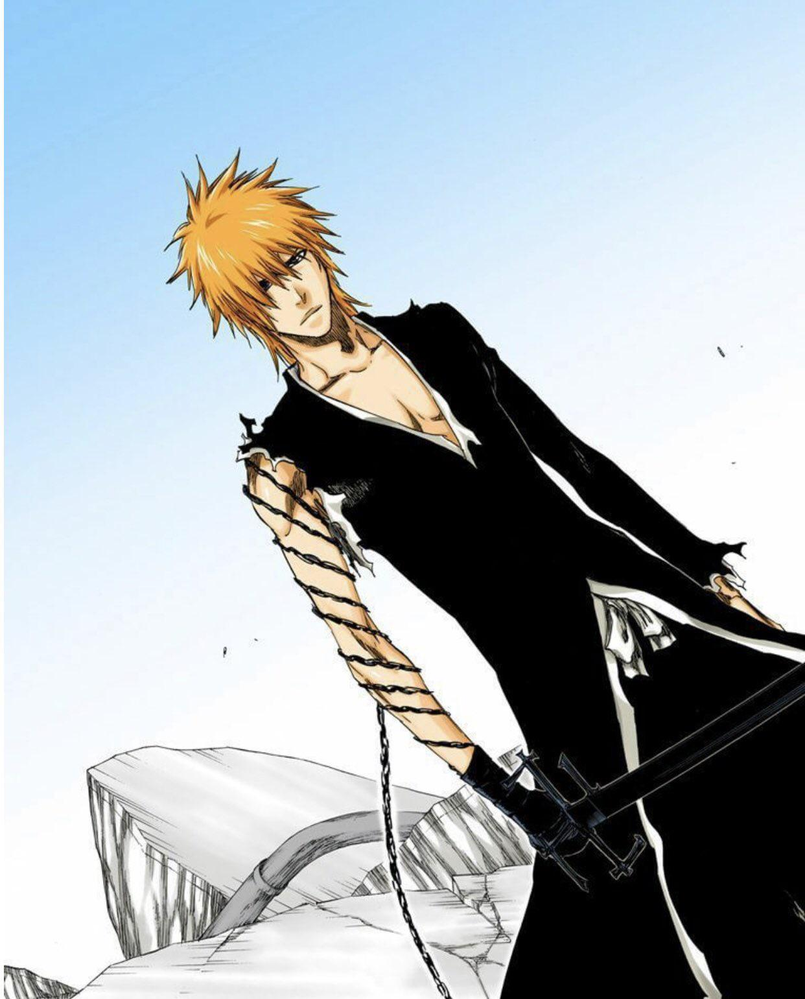
Ichigo Final
Forma final antes da perda dos poderes
A forma final de Ichigo antes da utilização de sua técnica definitiva. Representa o auge de seu poder naquele estágio da história, pouco antes do confronto decisivo contra Aizen.
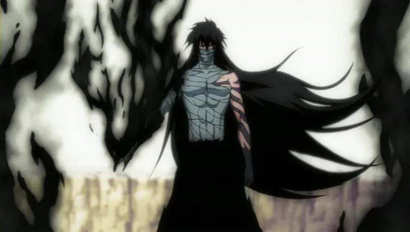
Mugetsu
Final Getsuga Tenshō — técnica suprema
Ao utilizar o Final Getsuga Tenshō, Ichigo assume a forma necessária para executar Mugetsu. O uso dessa técnica cobra como preço a perda de seus poderes de Shinigami.
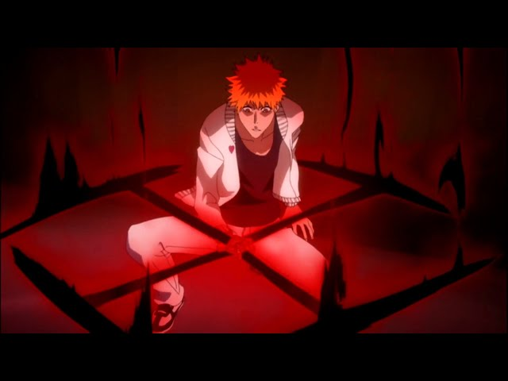
Fullbringer Inicial
Arco Fullbring — despertar
Sem seus poderes de Shinigami, Ichigo desperta seu Fullbring e começa a aprender a manipular a alma dos objetos. O poder inicialmente se manifesta de maneira incompleta.
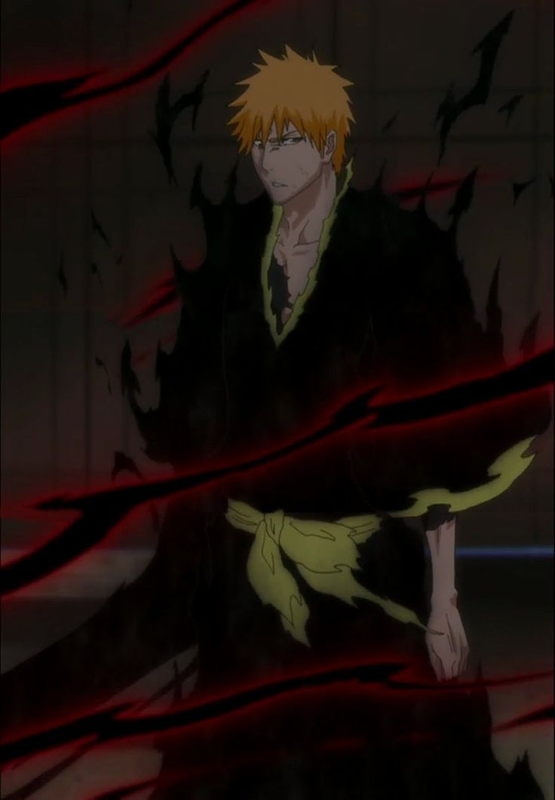
Fullbringer Shinigami
Fullbring integrado ao poder de Shinigami
Depois de recuperar seus poderes, Ichigo combina o desenvolvimento de seu Fullbring com seus poderes de Shinigami, resultando em uma aparência e conjunto de habilidades diferentes do período inicial.

Fullbringer Completo
Fullbring completo — ápice do poder humano
Ichigo domina completamente seu Fullbring antes de voltar a desenvolver suas capacidades como Shinigami. A forma representa o auge de seu poder Fullbring durante esse período.
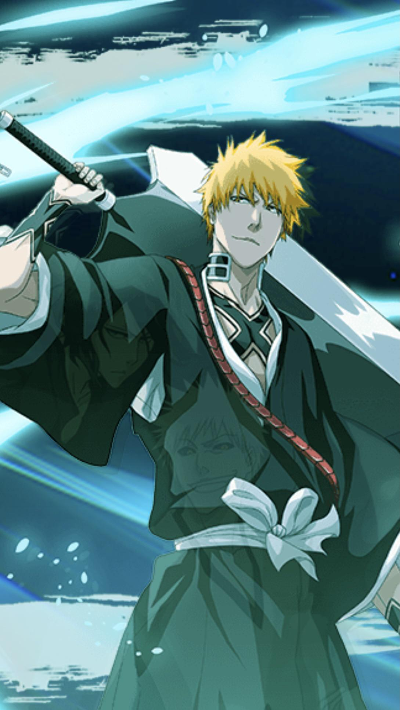
Shinigami Recuperado
Retorno dos poderes de Shinigami
Após receber novamente os poderes de Shinigami, Ichigo retorna ao combate com uma nova manifestação de Zangetsu, incorporando elementos de seu desenvolvimento anterior.
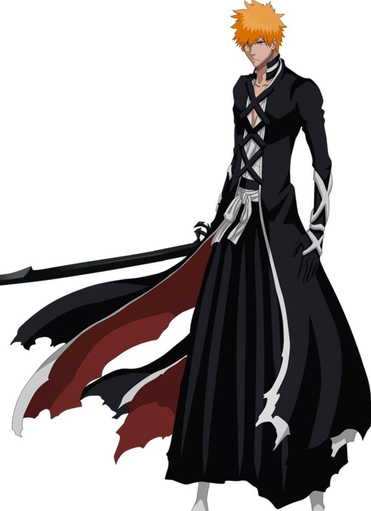
Bankai Recuperada
Novo Tensa Zangetsu
Ichigo volta a utilizar seu Bankai após recuperar seus poderes de Shinigami. Tensa Zangetsu retorna como sua principal forma de liberação para combates de alto nível.
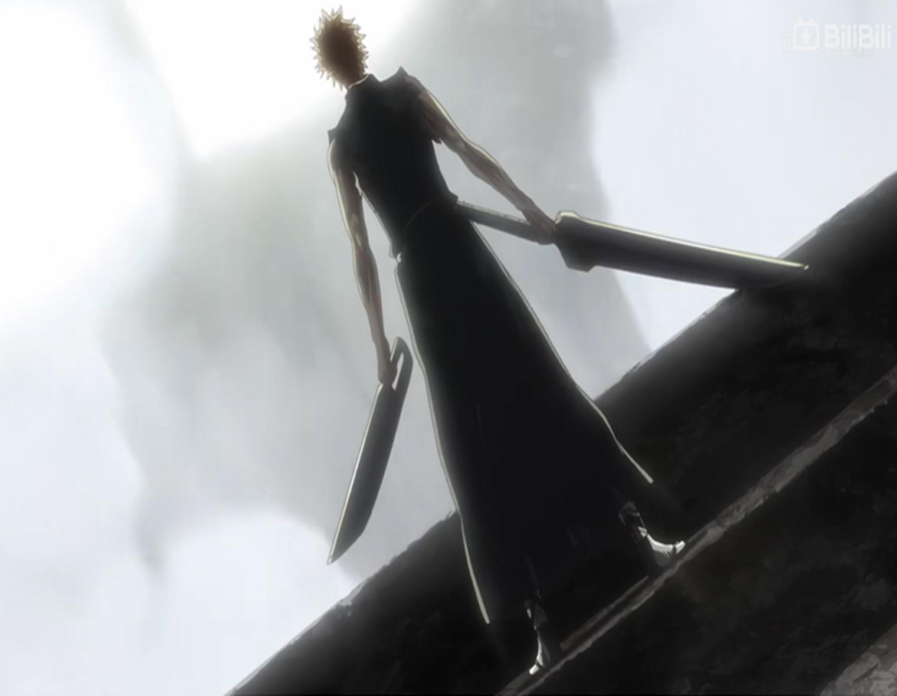
Dual Zanpakuto
Duas Zanpakutō — verdadeira natureza de Zangetsu
Após o treinamento no Palácio Real, Ichigo compreende a verdadeira natureza de seus poderes e manifesta duas Zanpakutō, representando as diferentes partes de sua herança espiritual.

Horn Of Salvation
Hollowficação avançada — chifre
Ichigo manifesta uma forma avançada de seu poder Hollow, com um chifre e marcas características. A forma combina seu poder de Shinigami e Hollow em uma manifestação extremamente poderosa.
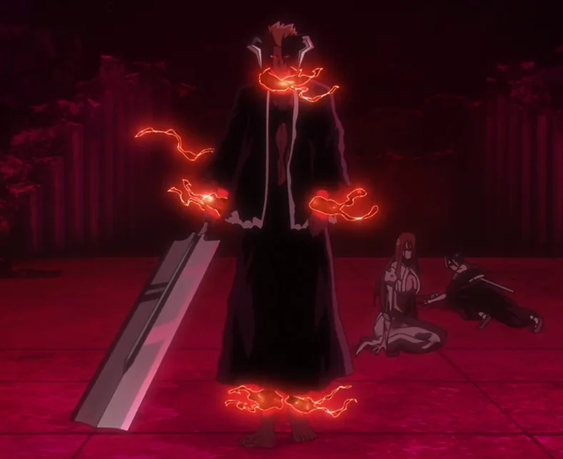
Blood Chains
Manifestação do poder Quincy
Uma manifestação ligada à herança Quincy de Ichigo, representando a presença desse poder em seu conjunto de habilidades durante a evolução final de sua natureza híbrida.
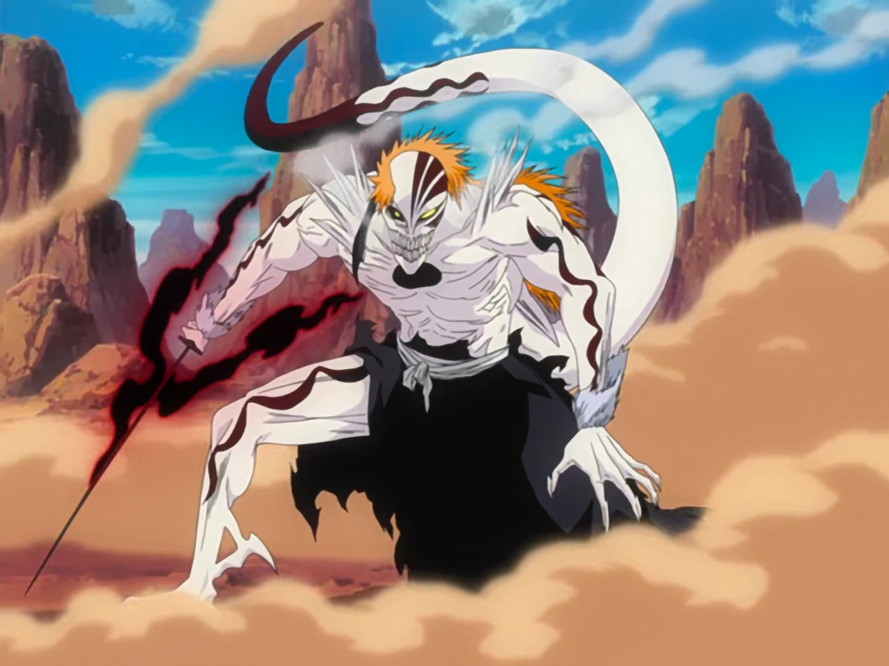
Ichigo Full Hollow
Manifestação Hollow completa
Transformação completa de ichigo em Hollow. Não canônica, aparece no arco filler a invasão.
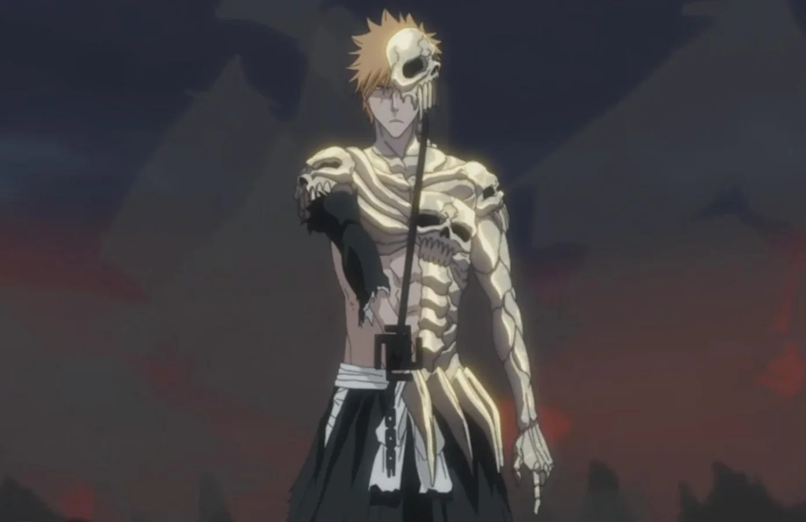
Ichigo Hell
Forma associada ao Inferno
Uma forma associada ao lado mais sombrio e sobrenatural de Ichigo, não canônica, e aparece no filme "Bleach: Hell Verse".